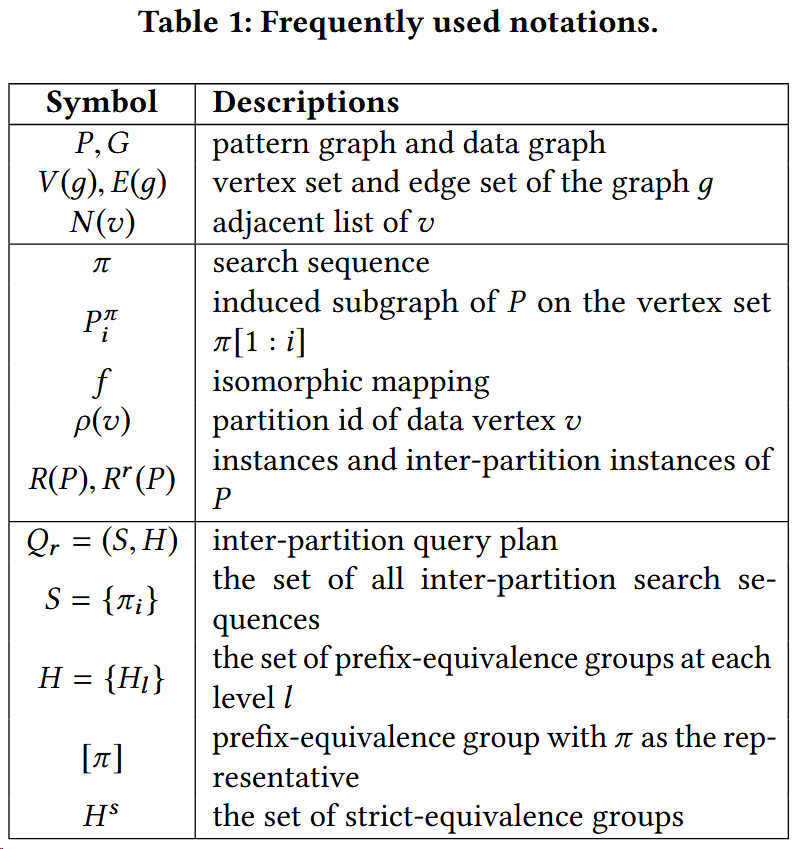
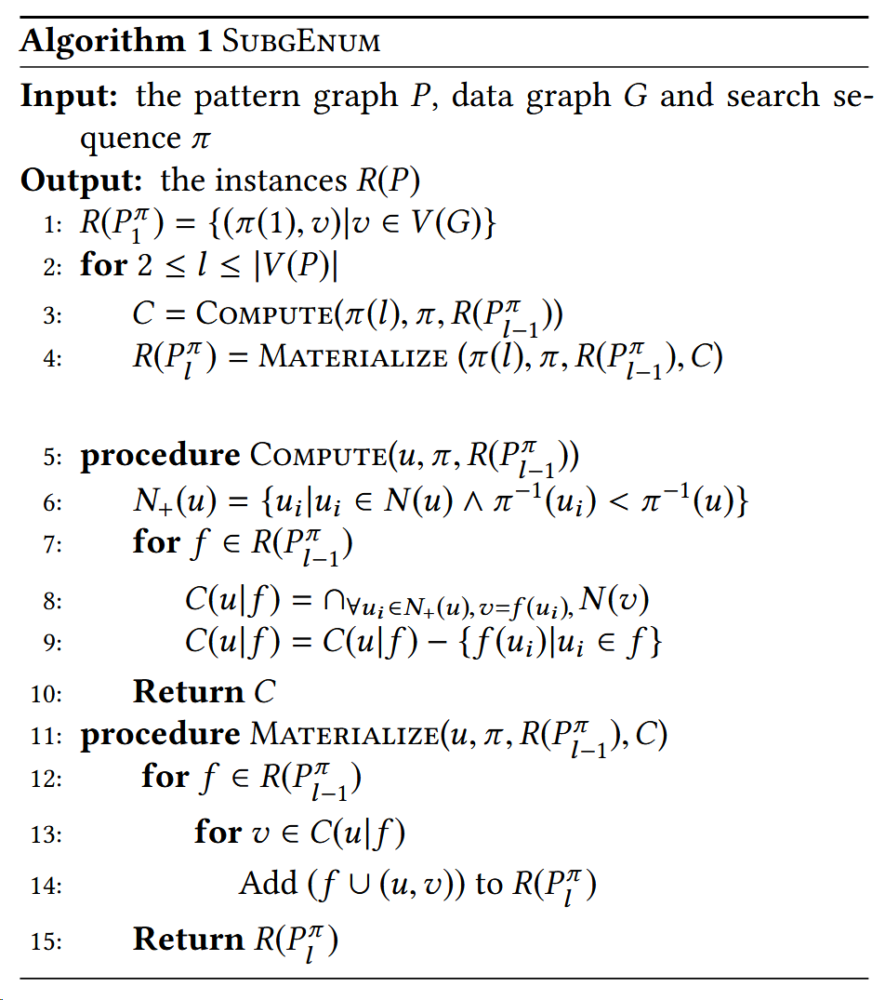

GPU-Accelerated Subgraph Enumeration on Partitioned Graphs
A paper at the SIGMOD 2020 conference.
其他是建立在 GPU 能放下数据图，或者数据图在主存中，通过采取合适的数据来传入 GPU 进行处理。
这个方法是直接分区，块中的内容不需要再调用主存。但是分区间仍然存在传输问题。
CPU-based Subgraph Enumerations
Single-machine subgraph enumeration
Built upon the Ullman‘s work
A selective search sequence
Various pruning techniques
Non-indexed approaches
To apply a series of feasibility rules. For example, we can invalidate unpromising partial instances beforehand.
Indexed approaches
To build the indexes that can prune partial instances as early as possible.
But it seems that the indexed approaches may not help.
Distributed subgraph enumeration
- Rely on distributed frameworks
GPU-based Subgraph Enumeration
Two major previous studies
- NEMO
- GPSM


COMPUTE：计算出来所有可能性。
$\pi(l)$: the $l^{th}$ vertex of $\pi$
$P^{\pi}_{i}$: subgraph of P on the vertex set π [1 : i]
$R(P)$: instances of P
$\pi ^{-1}(u)$: the ordinal position of $u$ in $\pi$
$N_{+}(u)$: In search sequence, the adjacent list of u and the vertex that before u in $\pi$
$C(u|f)$: for f and u, the set of possible candidate data vertices
MATERILALIZE：循环，将新的实例都输出在记录在新的$P^{\pi}_{l}$中，有点像 DP 的思想。

$\pi={u_1,u_2,u_3}$
$R(P^{\pi}_{1})={(u_1,v_1)},{(u_1,v_2)},{(u_1,v_3)},{(u_1,v_4)}$
$C2 = COMPUTE(u_2,\pi,R(P^{\pi}{1}))$
$N_+(u_2)={u_1}$
- $f={{(u_1,v_1)}}$
- $C(u_2|{(u_1,v_1)})={v_2,v_3,v_4}-{v_1}={v_2,v_3,v_4}$
- $f={{(u_1,v_2)}}$
- $C(u|f)={v_1,v_3,v_4}-{v_2}={v_1,v_3,v_4}$
- $f={{(u_1,v_3)}}$
- $C(u|f)={v_1,v_2,v_4}-{v_3}={v_1,v_2,v_4}$
- $f={{(u_1,v_4)}}$
- $C(u|f)={v_1,v_2,v_3}-{v_4}={v_1,v_2,v_3}$
$R(P^{\pi}_{2})=MATERIALIZE(u_2,\pi,R(P_1^\pi),C)$
$R(P_2^\pi) = $
${(u_1,v_1),(u_2,v_2)},{(u_1,v_1),(u_2,v_3)},{(u_1,v_1),(u_2,v_4)},$
${(u_1,v_2),(u_2,v_1)},{(u_1,v_2),(u_2,v_3)},{(u_1,v_2),(u_2,v_4)},$
${(u_1,v_3),(u_2,v_1)},{(u_1,v_3),(u_2,v_2)},{(u_1,v_3),(u_2,v_4)},$
${(u_1,v_4),(u_2,v_1)},{(u_1,v_4),(u_2,v_2)},{(u_1,v_4),(u_2,v_3)}$
$C3 = COMPUTE(u_3,\pi,R(P^{\pi}{2}))$
$N_+(u_3)={u_1,u_2}$
- $f={(u_1,v_1),(u_2,v_2)}$
- $C(u_3|{(u_1,v_1)(u_2,v_2)})={v_4}-{v_1,v_2}={v_4}$
- ....
$R(P^{\pi}_{3})=MATERIALIZE(u_3,\pi,R(P_2^\pi),C)$
$R(P_3^\pi) = $
${(u_1,v_1),(u_2,v_2),(u_3,v_4)},...$
PARTITION BASED ENUMERATION
Inter-partition Search
We use the standard graph partition approach, i.e., METIS